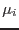

The task eboxdetect
takes as input  images of the same part of the sky in
images of the same part of the sky in  separate energy bands, and (in `map' mode)
separate energy bands, and (in `map' mode)  images of the estimated background counts per pixel. The task applies a sliding box to these stacked images.
images of the estimated background counts per pixel. The task applies a sliding box to these stacked images. At each pixel, then, the task has available
At each pixel, then, the task has available  values of the actual number of events found within the box and
values of the actual number of events found within the box and  values
of the expected number of background events within the same box. Considering for a moment just the values from a single band in isolation, if there were no sources in the field, then the probability of finding
values
of the expected number of background events within the same box. Considering for a moment just the values from a single band in isolation, if there were no sources in the field, then the probability of finding  counts in this box would be given by the familiar Poisson expression
counts in this box would be given by the familiar Poisson expression
The probability
that the observed count  is due only to background is therefore the sum of for all values of
is due only to background is therefore the sum of for all values of  from
from  to infinity. This can be shown to be equal to
to infinity. This can be shown to be equal to
where is the incomplete gamma function, defined by
eboxdetect
calculates the value of the LIKE column for the  th energy band from the likelihood
. The LIKE value
for the summary row
th energy band from the likelihood
. The LIKE value
for the summary row is calculated by eboxdetect
as follows. First, the values of LIKE for the individual bands are summed. This sum can be shown itself to follow a Poisson-like probability distribution. Leaving out the details, the probability
is calculated by eboxdetect
as follows. First, the values of LIKE for the individual bands are summed. This sum can be shown itself to follow a Poisson-like probability distribution. Leaving out the details, the probability
 that the vector of counts in the
that the vector of counts in the  bands is due solely to background can be shown to be approximately given by
bands is due solely to background can be shown to be approximately given by
The summary-row value of LIKE is thus calculated from
If there is no source at that location then clearly . Suppose however that there is actually a source which contributes, on average,
counts to band  within the box in question. Equation 1 becomes in this case
within the box in question. Equation 1 becomes in this case
The question which sensitivity should answer is, how small can the become while retaining ? The first step in answering this is to reduce the degrees of freedom in the problem. For this purpose it is convenient to express each as a product of two factors: a purely spectral factor , which will be held fixed, and a pure flux factor , which we vary. Let us find that which is the solution to
This value of represents the expectation value of counts within the detection box of a source of spectrum  which will, on average, result in a source detection against the given background.
This is exactly what sensitivity
does: solve equation 2. All that remains after that is to calculate
for all  , then convert these counts values to count rates by multiplication by the box exposure at that pixel, supplied via the parameter psfexpmapsets.
, then convert these counts values to count rates by multiplication by the box exposure at that pixel, supplied via the parameter psfexpmapsets.